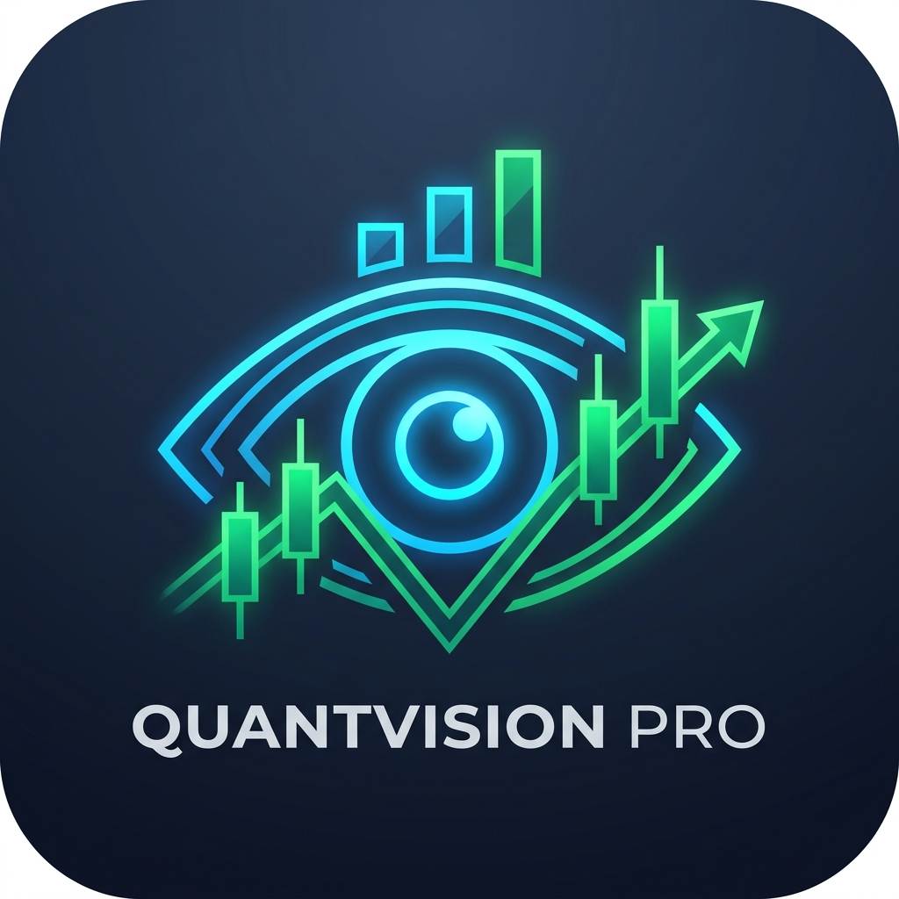

台美股估值監測與全球總經分析系統 (2026 最新數據)
載入中...
載入中...
載入中...
載入中...
| 標的/名稱 | 目前價位 | 股票估值 (P/E × EPS) |
建議買入價 | 建議賣出價 | 停損點 | P/E (本益比) |
EPS (每股盈餘) |
ROE (股東權益報酬率) |
ROA (資產報酬率) |
KD (隨機指標) |
MACD (趨勢指標) |
RSI (強弱指標) |
BB (布林位階) |
MA (月季線) |
法人目標 (評級/均價) |
殖利率 (Yield) |
量能比 (Vol Ratio) |
趨勢排列 (Alignment) |
Beta (連動性) |
軋空比 (Short %) |
操作理由 |
|---|
| 標的/名稱 | 目前價位 | 建議買入價 | 停損點 | P/E | EPS | ROE | ROA | KD (K/D) | MACD (M/S) | RSI | 布林通道 (BB) | 月/季線 (MA) | 法人目標 | 殖利率 | 量能比 | 趨勢排列 | Beta | 軋空比 | 操作理由 |
|---|
| 標的/名稱 | 目前價位 | 建議買入價 | 停損點 | P/E | EPS | ROE | ROA | KD (K/D) | MACD (M/S) | RSI | 布林通道 (BB) | 月/季線 (MA) | 法人目標 | 殖利率 | 量能比 | 趨勢排列 | Beta | 軋空比 | 操作理由 |
|---|